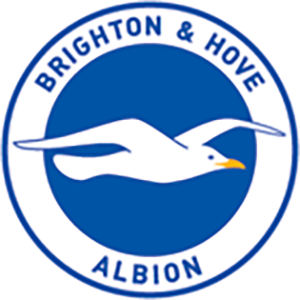
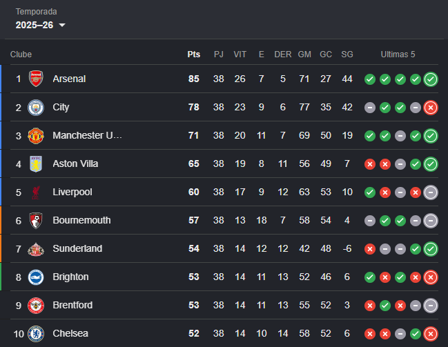

Brighton goleia Aston Villa por 4 a 0 na primeira rodada da Premier League
Veja os melhores momentos:
Brighton empata em 0 a 0 fora de casa no primeiro jogo da Conference League


Site oficial | Menu | Torcida | Elenco | Camisa | Cidade
Seja bem vindo(a) à Fan page brasileira do Brighton & Hove Albinon, um time da Inglaterra que joga na primeira divisão do país (Premier League) que vem crescendo constantemente nos últimos anos.
Aqui você poderá analisar tudo sobre o time inglês, como os jogos mais recentes, história, torcida, camisa, elenco e sua própria cidade.
Aperte alt + B para um supresa!

| Todos os títulos oficiais do Brighton | |
|---|---|
| Torneio | Ano |
| Supercopa da Inglaterra | 1910 |
| 3° divisão do Campeonato Inglês | 1957-58 |
| 4° divisão do Campeonato Inglês | 1964-65 |
| 4° divisão do Campeonato Inglês | 2000-01 |
| 3° divisão do Campeonato Inglês | 2001-02 |
| 3° divisão do Campeonato Inglês | 2010-11 |
